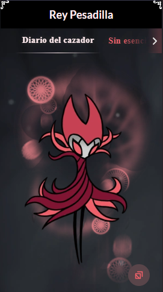
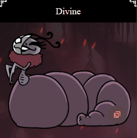

La Compañía de Grimm

Sinopsis
La Compañía de Grimm es el segundo de los 4 DLCs gratis para Hollow Knight. Se los representa como un
circo ambulante con unas peculiares tradiciones,
que consisten en alimentar a los «hijos» Grimm mediante la derrota de los suyos para absorber su poder,
como método para conseguir la vida eterna.
Grimm nos ofrecerá el amuleto «Niño Grimm», con el cual aparecerá un Grimm pequeño que nos seguirá y que
tendremos que alimentar con la energía de las llamas
y de algunos de los secuaces de Grimm que tendremos que ir derrotando alrededor de Hallownest.
Grimm
Grimm es el maestro de La Compañía de Grimm, un misterioso circo ambulante. En realidad, Grimm y su
Compañía viajan desde el Reino de las Pesadillas al lugar en el que la Linterna haya sido encendida por
sus seguidores.
Ellos recolectan Llamas de reinos en ruinas para avivar al ser siniestro ser que esclaviza a la
Compañía, el Corazón de la Pesadilla.
El Maestro de la Compañía tiene una personalidad encantadora y juguetona. Sin embargo, siendo el Rey
Pesadilla, sus pensamientos están concentrados en ser un esclavo o vasija del Corazón.
Su ritual para alimentar al Corazón consiste en primero hacer crecer al Niño de Grimm con Llamas de
pesadilla. Luego, matar al Rey Pesadilla para que renazca a través del Niño.
Grimm puede ser invocado en Hogar de Dioses por el ritual de la Buscadora de Dioses. Ahí estará
consciente de su entorno y encantado de participar, aunque él no sea un nativo de Hallownest.
Él se encuentra en el Panteón del Sabio y el Panteón de Hallownest. Después, el Rey Pesadilla aparece
como uno de los últimos tres dioses en la cima. Aunque esté lejos del Reino de las Pesadillas, el
Corazón aún observa la pelea del Rey Pesadilla.

Rey pesadilla
El Rey Pesadilla es el jefe final del DLC "La Compañía de Grimm" y la forma onírica de Grimm. Se
encuentra dentro del sueño del Maestro de la Compañía, quien duerme dentro la tienda.
Para luchar con él, se debe haber desbloqueado el amuleto Niño de Grimm, haber peleado contra los 9
Grimarios de la flama y haber derrotado a Grimm. Para entrar a su mente,
debemos usar el Aguijón Onírico en él y portar el Niño; de lo contrario, saldrá la frase "El niño..." de
la mente de este Maestro.
Divine
Divine es un miembro de la Compañía de Grimm. Su rol principal es permitir al jugador mejorar sus
Amuletos frágiles para que vuelvan irrompibles.
Aparece en Bocasucia junto al resto de la Compañía una vez se enciende la linterna. Vive en una pequeña
tienda que se encuentra a la izquierda de la principal.
Si el jugador decide desvanecer a la Compañía de Grimm destruyendo la linterna, Divine desaparecerá con
los demás. En el caso de que tuviera algún amuleto frágil en su estómago, lo dejará en el mismo lugar
que se encontraba su tienda de campaña.
Sin embargo, sólo marchará tras derrotar al Rey Pesadilla si ya habíamos mejorado todos los amuletos
frágiles.
Por 9000 de geo, mejorará Codicia frágil a Codicia irrompible.
Por 12000 de geo, mejorará Corazón frágil a Corazón irrompible.
Por 15000 de geo, mejorará Fuerza frágil a Fuerza irrompible.

Para realizar la mejora, el jugador debe equiparse uno de los amuletos frágiles y hablar con ella.
Seguidamente, pedirá al jugador que se lo deje, comiéndoselo en caso afirmativo.
Por último, al hablar con ella de nuevo, nos pedirá una cantidad de Geo y excretará la versión mejorada
del amuleto ingerido.
.webp)